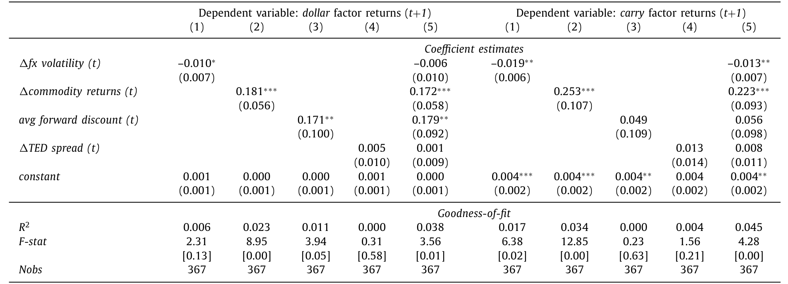
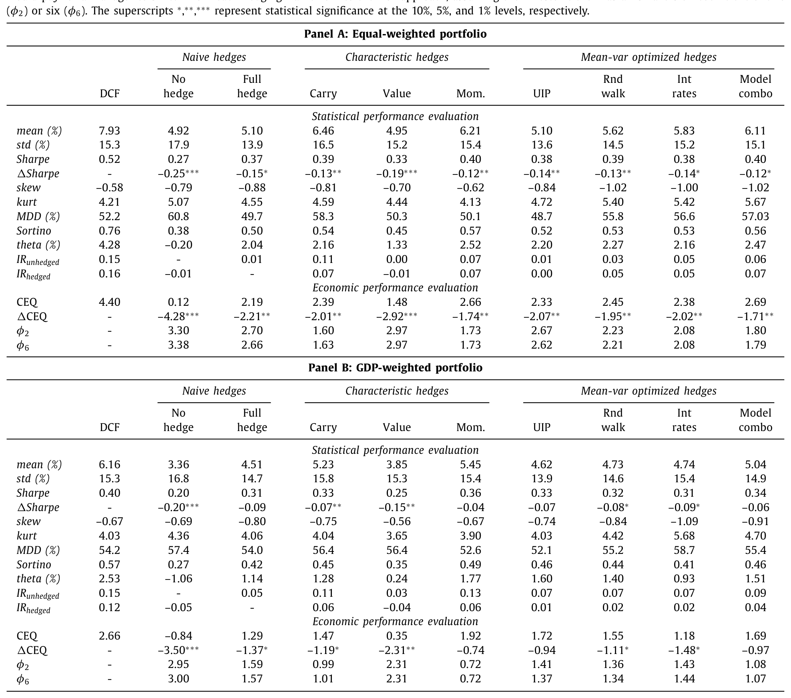
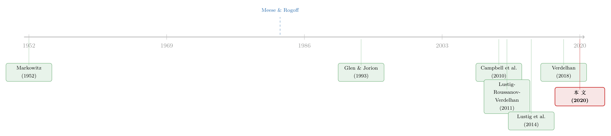

外汇敞口该怎么对冲？——把答案藏进「美元」和「套利」两个因子里
本文读的是 Opie & Riddiough (2020, Journal of Financial Economics)：他们提出一套「动态货币因子对冲」(dynamic currency factor hedging, DCF) 的方法——不去硬猜单个汇率，而是先预测 美元 (dollar) 与 套利 (carry) 两个全球货币因子的可预测成分，再反推出每种货币的对冲头寸。结果是：股票组合的夏普比率比「完全不对冲」高 90% 以上、比「完全对冲」高 40% 以上；独立运行这套信号还能拿到 0.78 的夏普比率。
1 一个绕不开的问题：钱出了国，汇率怎么办
先看一组数字。美国投资者持有的海外股票和债券，过去几十年的增速是本国 GDP 增速的十几倍，而且其中绝大部分是用外币计价的（见下文图示）。这意味着一个美国投资者买了一篮子德国股票、日本国债，他真正承担的风险，并不只是这些资产本身的涨跌，还有欧元、日元兑美元的汇率波动。一旦把收益折回美元，整条风险—收益曲线都会被汇率重新「揉」一遍。
于是那个一阶的问题就摆在桌面上：外汇敞口 (FX exposure) 到底该怎么管？
最省事的答案有两个极端。一是全部对冲——在远期市场 (forward market) 上把所有外币敞口锁死。可这么做不便宜，而且把货币本身可能带来的收益、以及外币对底层资产的「天然对冲」作用 (Campbell et al., 2010) 一并扔掉了。二是干脆不对冲——如果投资期足够长，汇率均值回复，索性躺平 (Froot, 1993)。
学界更精致的做法是把汇率和底层资产的联合分布塞进一个均值方差优化器，让它吐出「最优的、逐币种的」对冲头寸。理论上很美，可一旦拿到样本外 (out-of-sample, OOS) 去做，就栽在一个老问题上。
接着，一个自然的问题是：既然均值方差框架理论上最优，为什么实践里它常常打不过「全对冲」甚至「不对冲」这种笨办法？
2 病根：汇率，本就是出了名的「测不准」
答案藏在均值方差优化对输入参数的极端敏感上。优化器要的是预期收益向量和协方差矩阵，而其中最难估的，就是预期货币收益。
汇率预测有多难？这是国际金融里的一桩公案。Meese and Rogoff (1983) 那篇经典论文给出过一个让无数人沮丧的结论：在样本外，再花哨的汇率模型也跑不赢一个「随机游走」。换句话说，逐个去预测欧元、日元下个月怎么走，得到的几乎全是噪声。把这种满是估计误差的预期收益喂进优化器，输出的对冲头寸自然东倒西歪，样本外表现一塌糊涂 (Gardner and Stone, 1995; Larsen Jr. and Resnick, 2000)。
这正是 DeMiguel et al. (2009) 那个著名教训的货币版本：当输入噪声太大，复杂的优化反而不如朴素的等权。
所以问题从来不是「均值方差框架本身错了」，而是「喂给它的预期货币收益太脏了」。要救它，得换一种更干净的方式去估计货币收益。
但真正关键的一步，是作者绕开了「直接预测单个汇率」这条死路。
3 反转：不猜汇率，去猜「因子」
近十年国际宏观金融的突破，给了一把新钥匙。Lustig et al. (2011) 和 Verdelhan (2018) 发现：货币收益的横截面，可以用一个线性因子模型干净地解释，模型里只有两个全球货币风险因子——
- 美元因子 (dollar factor)：一篮子货币兑美元的平均收益；
- 套利因子 (carry factor)：货币套利交易 (carry trade) 的收益。
更关键的是，这两个因子在同期回归里还能解释汇率时间序列变动的很大一部分。作者顺着这条线推出一个朴素却有力的逻辑链：如果因子收益是可预测的，那么货币收益也就部分可预测了。
这就是 DCF 的全部巧思所在。我们不必去预测「欧元下个月涨不涨」这种几乎不可能的事；我们只需要预测两个全球因子的走向，再借助每种货币对因子的暴露 (factor beta)，把因子预测「翻译」成对单币种收益的预测。预测的维度一下子从「N 个汇率」压缩到「2 个因子」，估计误差被大大稀释。
把它想成一次降维：与其在 N 维的噪声海里捞针，不如先在 2 维的因子空间里做预测，再用 beta 矩阵线性地映射回 N 维。脏的预期收益，就这么被「洗」干净了。
（关于「货币动量其实只是因子在重复自己」、以及汇率里那块找不到的风险溢价，本博客分别讨论过《货币动量的真身：它不过是因子在「重复自己」》与《汇率里那块「找不到」的风险溢价》，可对照着读。）
4 识别与构造：从因子预测到对冲头寸
这篇论文不是一篇因果识别 (causal identification) 的实证文章，它的「识别」其实是一整套样本外的构造与检验流程。我们一步步拆开。
4.1 优化目标
站在一个美国投资者的角度，他在外币资产（股票或债券）上已经有了预先给定的多头仓位，现在要在远期合约上加头寸来管理汇率敞口。目标是最大化一个均值方差投资者的效用：
$$ \mu_{p,t} - \frac{\gamma}{2}\,\sigma_{p,t}^{2}, $$
其中 \(\mu_{p,t}=w_t'\mu_t\) 是组合预期收益，\(\sigma_{p,t}^2=w_t'\Sigma_t w_t\) 是组合方差，风险厌恶系数 \(\gamma\) 取为 3。
4.2 核心方程：最优对冲头寸
把预期收益向量和协方差矩阵在「底层资产 \(x\)」与「远期合约 \(f\)」之间分块后，可以解出远期合约上的最优权重。这是整套方法的核心，我们把它的每一块标注出来：
这条方程把对冲拆成了两股力量。第二项 \(\delta_t w_{x,t}\) 是纯粹的风险管理：它告诉你为了最小化方差应该对冲多少，这正是 Campbell et al. (2010) 那类「最小方差对冲」的做法。第一项 \(\tfrac{1}{\gamma}\Sigma_{ff,t}^{-1}\mu_{f,t}\) 才是投机性的——它依赖于预期货币收益 \(\mu_{f,t}\)，而 DCF 的全部功夫，就花在把这个 \(\mu_{f,t}\) 估准上。
注意这里的约束：实践中货币 overlay 经理通常被限制「只能对冲已有敞口」，所以对每个币种，权重被限制在 \(-w_{x,t}\)（完全对冲）和 \(0\)（完全不对冲）之间——既不能过度对冲，也不能反过来加杠杆。
4.3 预期货币收益怎么来
货币 \(i\) 的（对美国投资者而言的）超额收益定义为现货收益减去远期升水：
$$ R_{i,t+1} = \frac{S_{i,t+1}-S_{i,t}}{S_{i,t}} - \frac{F_{i,t}-S_{i,t}}{S_{i,t}}, $$
其中 \(S_{i,t}\) 是货币 \(i\) 的美元现货价，\(F_{i,t}\) 是远期价。按 Lustig et al. (2011)，横截面预期收益由两因子决定：
$$ E\,R_i = \beta_i^{dol}\,\lambda^{dol} + \beta_i^{car}\,\lambda^{car}. $$
接着分两步把它做成条件预测。第一步，用 60 个月滚动窗口回归，估出时变的因子暴露：
$$ R_{i,t} = \alpha_i + \beta_{i,t}^{dol}\,\lambda_t^{dol} + \beta_{i,t}^{car}\,\lambda_t^{car} + \varepsilon_{i,t}. $$
第二步——这是真正的创新——用一组有理论支撑的预测变量 \(X_{t-1}\) 去预测因子收益本身：
$$ \lambda_t^{j} = \varsigma_{j,t} + \psi_{j,t}\,X_{t-1} + \eta_{j,t}, \quad j=\{dol,\,car\}. $$
用到的预测变量都不是凭空挑的：预测美元因子用平均远期贴水 (average forward discount, Lustig et al., 2014)；预测套利因子用 FX 波动率 (Menkhoff et al., 2012a)、TED 利差 (Brunnermeier and Pedersen, 2009)、以及大宗商品收益 (Ready et al., 2017)。把预测出的因子收益 \(\hat\lambda_{t+1}^j\) 与估出的 beta 相乘，就得到了样本外的预期货币收益向量 \(\mu_{f,t}\)，再代回 4.2 的方程。

Table 2: presents results for a series of ordinary least
5 数据与主要结果
数据。 投资者持有 G10 发达经济体（澳元、加元、欧元、日元、新西兰元、挪威克朗、瑞典克朗、瑞郎、英镑、美元）的股票或债券组合；现货与一月期远期汇率取月末数据。样本外检验跨度约 20 年，从 1997 年到 2017 年 7 月。底层权重要么等权，要么按上一年 GDP 加权。
主要结果。 作者拿 DCF 去和 9 个主流对冲方案打擂台——从「全对冲 / 不对冲」这种笨办法，到同样用均值方差优化的精致方法。结论相当干净：
- 股票组合：DCF 的夏普比率统计上显著高于全部 9 个对手。相对「不对冲」提升 超过 90%，相对「全对冲」提升 超过 40%——后者尤其难得，因为要在统计上跑赢被动对冲策略本就极难 (Glen and Jorion, 1993)。
- 债券组合：教科书常说「全对冲」是管理全球债券组合的最优解 (Campbell et al., 2010)，可 DCF 的夏普比率仍比全对冲高 40% 以上。
- 一个直观的画面：1997 年 1 月投入的 1 美元，到 2017 年 7 月，DCF 对冲下股票组合长成 5 美元、债券组合近 4 美元；而若不对冲，分别只有 2 美元和 1.5 美元。
- 把 CEQ（确定性等价）收益、Sortino 比率、抗操纵的 theta 测度 (Ingersoll et al., 2007) 等一整套指标都跑一遍，结论不变。而且 DCF 股票组合负偏度最小、最大回撤之一最低——说明它的超额收益不是靠多承担「崩盘风险」换来的。
- 一个均值方差投资者愿意每年付 3% 的业绩费，从「不对冲」切换到 DCF。

Table 3
作者还做了一系列追问。其一，把协方差项换成「完美预知下个月真实收益」的事后协方差，对整体业绩几乎没有改善——这反过来说明，收益的提升几乎全部来自把预期货币收益估准了，而不是协方差。其二，站在其他 G10 经济体投资者的角度，DCF 在 95% 的检验里给出最高或次高的夏普与 CEQ。其三，业绩来源被拆解后，发现它几乎完全来自「择时汇率、抓住因子收益的可预测成分」，而非靠对冲低息货币或时变 beta。
6 延伸：把货币信号「单拎出来」当一个组合
最后一个反转很漂亮。既然 DCF 能估出哪种货币的预期收益为正、哪种为负，何不干脆独立地做一个货币交易组合——做多预期收益为正的货币、做空为负的——而不只是用它来对冲已有敞口？
这个「独立 DCF 货币组合」收益正偏，夏普比率高达 0.78，而且与既有的货币 carry、value、momentum 策略基本不相关，能为全球股债投资者提供这些经典策略之外的额外分散化收益 (呼应 Kroencke et al., 2014 的发现)。对那些有更宽授权、不被「只能对冲已有敞口」束缚的基金经理来说，这是一条额外的 alpha 来源。
7 文献脉络
把这条线索捋一遍，能更清楚地看见这篇论文站在哪。
最早，国际分散投资的逻辑由 Markowitz (1952)、Solnik (1974) 奠基：跨国相关性低，纳入外资产能改善风险—收益。可钱出了国，汇率怎么办就成了问题。早期两个极端方案——Perold and Schulman (1988)、Eun and Resnick (1988) 主张全对冲降波动，Froot (1993) 主张长期不对冲。接着，更精致的均值方差 overlay 出现，Glen and Jorion (1993)、Campbell et al. (2010) 是代表，后者强调要给「美元、欧元」这类安全港货币留敞口；De Roon et al. (2012) 则提醒这种「保险」并不免费。
另一条线在国际宏观金融里独立生长：Lustig and Verdelhan (2007)、Lustig et al. (2011) 找到货币收益横截面的两因子结构（dollar 与 carry），Verdelhan (2018) 进一步量化了双边汇率中系统性变动的占比，Lustig et al. (2014) 揭示因子收益的逆周期可预测性。

这篇论文做的，就是第一次把这两条河接到一起：用第二条线的「因子可预测性」去喂第一条线的「均值方差对冲框架」，从而绕开 Meese-Rogoff 那道「汇率测不准」的墙。它所处的位置，正是国际投资组合管理与国际资产定价的交汇点。
8 评论与延伸（Q&A + 研究方向）
(a) 几个可能的疑问
Q：这跟「直接做 carry trade」有什么本质区别？
区别在「条件 vs 无条件」。Carry trade 是按当下的远期贴水无条件地排序做多做空；DCF 是先预测因子收益、再借 beta 翻译成对单币种的条件预期，本质上是给 carry/dollar 因子做择时。论文也证明，独立 DCF 组合的收益与传统 carry/value/momentum 基本不相关，说明它抓的不是同一块风险溢价。
Q：样本外业绩好，会不会只是「事后挑了好用的预测变量」？
这是最该警惕的点。作者的辩护是：四个预测变量（平均远期贴水、FX 波动率、TED 利差、商品收益）都不是数据挖出来的，而是先有理论预测它们驱动 dollar 或 carry 因子，再拿来用。但「理论在先」不等于无偏，预测系数 \(\psi_{j,t}\) 仍是滚动估计，仍可能过拟合——这是读者应当保留的怀疑。
Q：为什么说收益「不是靠崩盘风险换来的」可信？
因为 DCF 股票组合恰恰是负偏度最小、最大回撤最低之一。如果超额收益来自隐性的尾部风险（像裸 carry 那样「捡硬币、躲压路机」），偏度和回撤会更糟而不是更好。Sortino、theta 这些专门惩罚负偏分布的指标也都站在 DCF 这边。
Q：完美预知协方差都没用，是不是说协方差根本不重要？
准确说是：在货币对冲这个问题里，业绩的胜负手是预期收益而非协方差。这跟一般均值方差「协方差估计误差是主凶」的直觉相反，原因在于这里底层资产权重是给定的，优化只在远期合约维度上做，预期货币收益的信号—噪声比成了瓶颈。
Q：对债券组合也赢「全对冲」，是不是太反直觉？
确实反直觉，因为「全对冲是债券组合最优解」几乎是业界共识 (Campbell et al., 2010)。DCF 能赢，说明即便对债券，放弃全部货币收益也是有代价的——只要你能把货币收益估得比随机游走好一点点，条件对冲就优于一刀切。
Q：交易成本、危机期会不会把超额收益吃光？
作者专门做了稳健性：纳入更高交易成本、剔除危机期、换不同样本外窗口与滚动/扩展窗口，结论都站得住。但 G10 远期市场流动性极好，把这套方法搬到新兴市场货币上，成本能否扛住是另一回事。
(b) 几个可能的研究问题与提案
1. 把 DCF 的逻辑搬到公司债的货币敞口上。
【经济故事】全球信用基金大量持有外币计价公司债，其汇率敞口管理几乎沿用股债 overlay 的老办法。但公司债收益里掺着信用利差，外币敞口与底层信用风险的相关结构和股票不同，DCF 的「因子→beta→对冲」框架可能给出不一样的最优头寸。【可行性】中。需要 TRACE/外币公司债成交数据加远期汇率，识别上仍是样本外构造检验，难点在公司债流动性差、协方差估计更脏（可参见《把「成交价」从「成交量」里解放出来》）。
2. 外资持有人结构与一国货币因子暴露的关系。
【经济故事】Maggiori et al. (2019) 发现美国投资者尽量持有美元计价外债。如果一国债券被外资以本币还是外币持有，会反过来影响该货币对 dollar/carry 因子的 beta，那么 DCF 的对冲头寸应随持有人结构内生变化。【可行性】中。需要 TIC、Lane-Milesi-Ferretti 外部头寸数据匹配货币因子 beta，识别可用持有人结构的横截面差异，doable 但因果性偏弱。
3. 因子可预测性的「拥挤」与衰减。
【经济故事】一旦 DCF 这类策略被广泛采用，因子收益的可预测成分会不会像股票异象那样被套利掉？【可行性】高。可在论文样本（截至 2017）之后接上 2018–2025 的样本外数据，检验 \(\psi_{j,t}\) 的预测力是否衰减——这是纯粹的 OOS 延展，数据现成（可对照《风险溢价，是「消失」了，还是「断」掉了？》的思路）。
4. 把 DCF 信号嵌入流动性约束下的最优对冲。
【经济故事】外汇做市商有「风险预算」，大额对冲会推动价格（参见《全世界最大的市场，也有「推不动」的时候》）。当 DCF 要求的头寸很大时，价格冲击会侵蚀其理论收益。【可行性】中。需要 FX 价格冲击的微观结构数据，把冲击成本写进 4.2 的优化目标，doable 但对数据要求高。
9 我的判断
这篇论文的贡献是干净而务实的：它没有发明新的风险因子，也没有声称破解了汇率预测之谜，而是聪明地把「因子层面的弱可预测性」转化成「货币层面足以改善对冲的预期收益」，从而让一个理论上最优、实践中却长期失灵的均值方差框架真正跑了起来。把预测维度从 N 个汇率压到 2 个因子，是整篇文章最值得借鉴的方法论直觉。
对识别，我的保留有三处。其一，预测变量「理论在先」固然比纯数据挖掘干净，但四个变量、两个因子、20 年样本外，仍存在隐性的设定搜索空间，业绩的统计显著性需要打一点折扣。其二，业绩高度依赖 G10 远期市场的低成本与高流动性，外推到新兴市场或大额资金时未必稳健。其三，「完美预知协方差也没用」这个结论很有冲击力，但它也意味着整套方法的命门完全押在因子收益预测上——一旦因子可预测性在未来样本里衰减，DCF 的优势会比基于风险管理的对冲更快地塌掉。
后续我最想看到的，是把它接到 2018 年之后的样本，检验这套因子可预测性在被「写进论文、广为人知」之后是否依然存在——这既是对方法的压力测试，也是对「货币因子溢价究竟是风险补偿还是可被套利的错误定价」这一更大争议的一次自然实验。
参考文献
- Brunnermeier, M.K., Pedersen, L.H. (2009). Market liquidity and funding liquidity. Review of Financial Studies 22(6), 2201–2238.
- Campbell, J.Y., Serfaty-de Medeiros, K., Viceira, L.M. (2010). Global currency hedging. Journal of Finance 65(1), 87–121.
- De Roon, F., Eiling, E., Gerard, B., Hillion, P. (2012). Currency risk hedging: No free lunch. Working paper.
- DeMiguel, V., Garlappi, L., Uppal, R. (2009). Optimal versus naive diversification: How inefficient is the 1/N portfolio strategy? Review of Financial Studies 22(5), 1915–1953.
- Froot, K.A. (1993). Currency hedging over long horizons. Working paper.
- Glen, J., Jorion, P. (1993). Currency hedging for international portfolios. Journal of Finance 48(5), 1865–1886.
- Ingersoll, J., Spiegel, M., Goetzmann, W., Welch, I. (2007). Portfolio performance manipulation and manipulation-proof performance measures. Review of Financial Studies 20(5), 1503–1546.
- Kroencke, T.A., Schindler, F., Schrimpf, A. (2014). International diversification benefits with foreign exchange investment styles. Review of Finance 18(5), 1847–1883.
- Lustig, H., Roussanov, N., Verdelhan, A. (2011). Common risk factors in currency markets. Review of Financial Studies 24(11), 3731–3777.
- Lustig, H., Roussanov, N., Verdelhan, A. (2014). Countercyclical currency risk premia. Journal of Financial Economics 111(3), 527–553.
- Markowitz, H. (1952). Portfolio selection. Journal of Finance 7(1), 77–91.
- Meese, R.A., Rogoff, K. (1983). Empirical exchange rate models of the seventies: Do they fit out of sample? Journal of International Economics 14(1), 3–24.
- Menkhoff, L., Sarno, L., Schmeling, M., Schrimpf, A. (2012). Carry trades and global foreign exchange volatility. Journal of Finance 67(2), 681–718.
- Perold, A.F., Schulman, E.C. (1988). The free lunch in currency hedging: Implications for investment policy and performance standards. Financial Analysts Journal 44(3), 45–50.
- Ready, R., Roussanov, N., Ward, C. (2017). Commodity trade and the carry trade: A tale of two countries. Journal of Finance 72(6), 2629–2684.
- Solnik, B.H. (1974). Why not diversify internationally rather than domestically? Financial Analysts Journal 30(4), 48–54.
- Verdelhan, A. (2018). The share of systematic variation in bilateral exchange rates. Journal of Finance 73(1), 375–418.